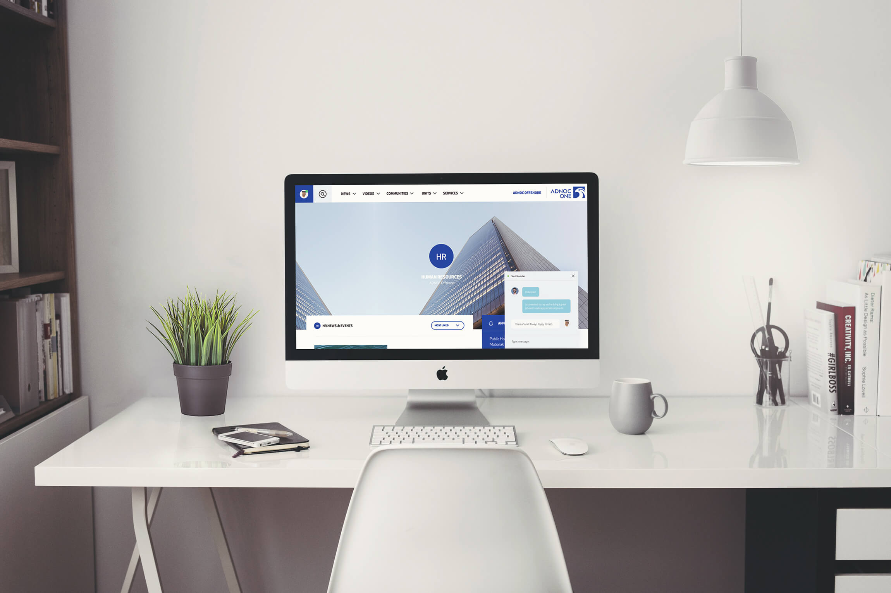
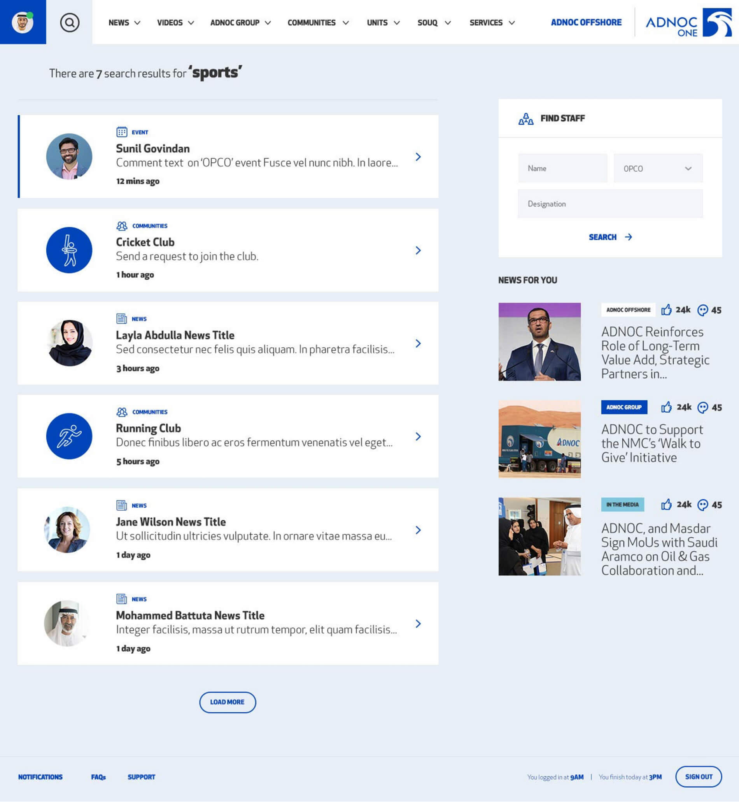
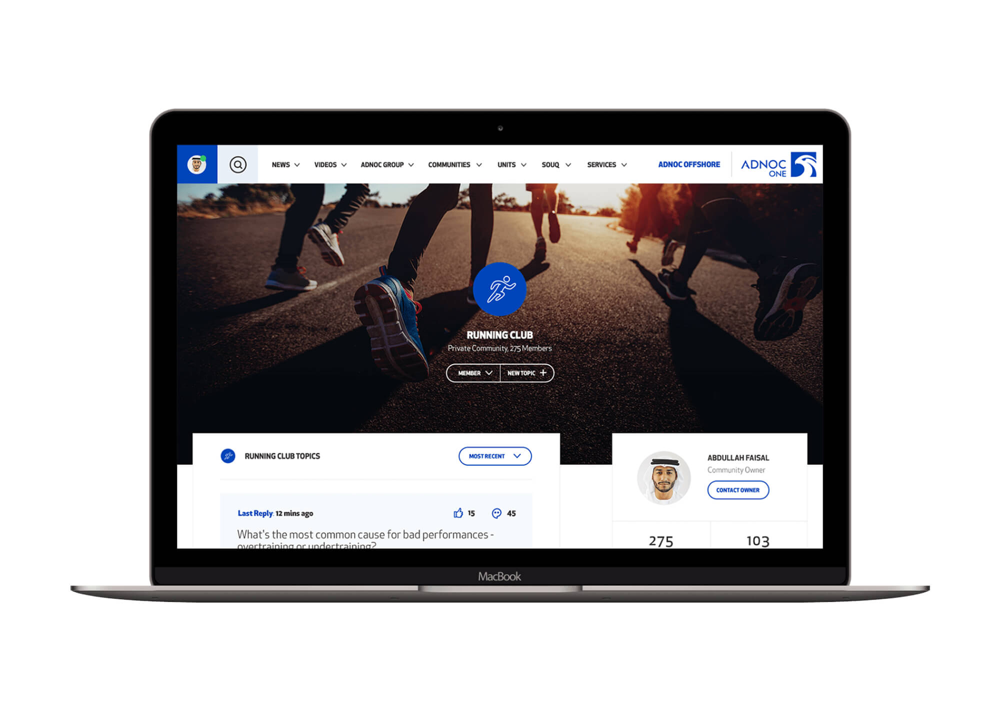
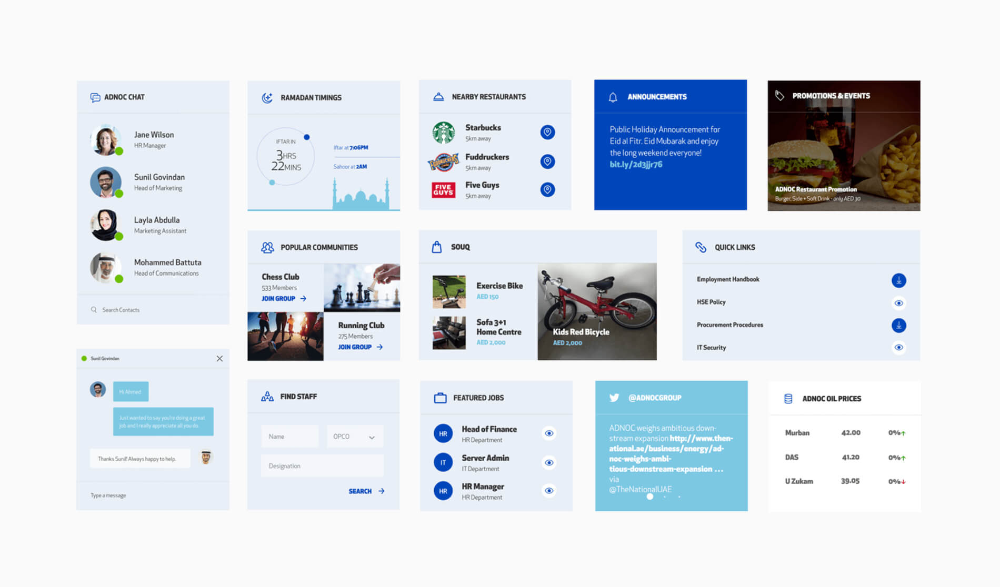
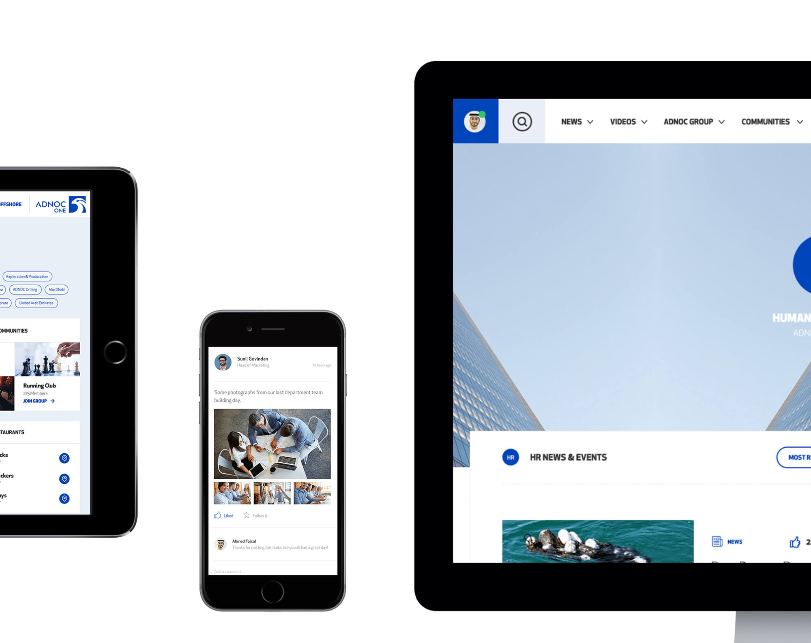

The new design of ADNOC’s giant intranet was a big challenge, as it involves the whole corporate world inside the digital platform. The portal consists of departments pages, sign in and sign up flows separate for employees from different branches and departments, communication channels, interests based communities and many more. I enjoyed the process of discussions related to business requirements and especially visuals. It was crucial to keep consistency across the entire design scope.



